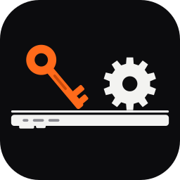

المالك
—
⋮
🔄 تحديث
🧾 فواتير المشتريات
📦 مخزن قطع الغيار
🔩 مراجعة قطع الغيار
🧾 الحسابات
📋 الجرد
👤 حسابي
⏰ المواعيد
💰 مرتبك
⚙️ الإعدادات
💰 تسعير أجهزة
تسجيل الخروج ⏻
＋
جهاز جديد
📥 استلام جهاز جديد
×
نوع الجهاز
الموديل
اسم العميل
🎨 لون الجهاز
*
🔢 الرقم التسلسلي IMEI/SN (اختياري)
تليفون العميل
المحل (اختياري)
الفني
العطل / المشكلة
🔒 باسورد الجهاز (اختياري)
📝 ملاحظات (اختياري)
سجّل الجهاز في المحل
×
×
📢
تمام، فهمت 👍
جاري التحميل...
⚙️ الإعدادات
×
🎨 المظهر
🌐 اللغة
💰 تسعير أجهزة
×
📋 الجرد
×
🔩 مراجعة قطع الغيار
×